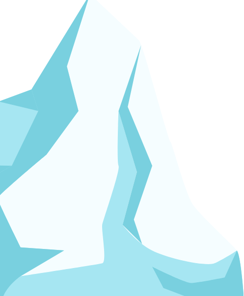
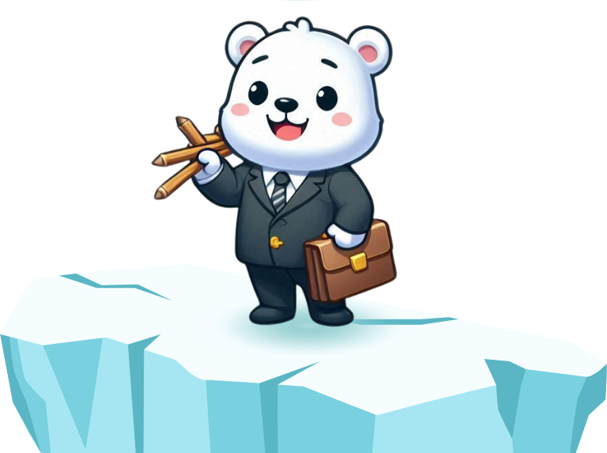

Seu futuro começa com curiosidade
Descongele seu futuro.
Descubra quais cursos combinam mais com seus interesses, sua forma de pensar e o jeito como você lida com situações reais.
✓ 21 perguntas • 3 etapas • resultado com top 3


7 cursospara comparar
Top 3de afinidades
Mais que um resultado
Um teste feito para explorar, não para te prender a uma escolha.
Você recebe caminhos possíveis e informações para continuar pesquisando de forma consciente.
Interesses
Primeiro, observamos os temas e atividades que naturalmente chamam sua atenção.
Seu jeito de trabalhar
Depois, entram suas preferências para aprender, decidir, cooperar e resolver problemas.
Cenários reais
Por fim, você escolhe como agiria em situações ligadas a estudo, trabalho e projetos.
Pronto para descobrir seus caminhos?
Você pode sair e voltar depois: o progresso fica salvo no navegador.